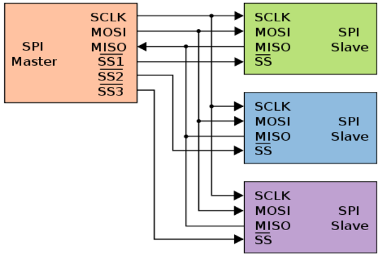
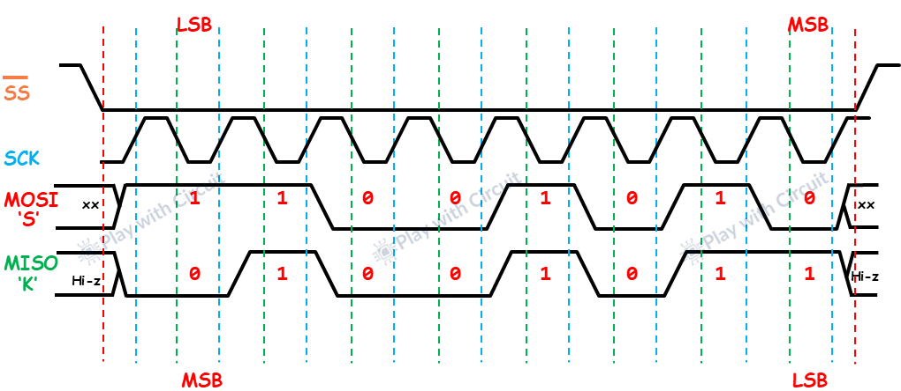

Magistrala SPI: obsługa wyświetlacza TFT
Magistrala I2C, choć bardzo oszczędna pod kątem wyprowadzeń, posiada poważne ograniczenie: prędkość. Przy przesyłaniu dużych ilości danych, takich jak całe ramki obrazu dla kolorowych wyświetlaczy graficznych czy dane z kart pamięci SD, I2C okazuje się zbyt wolne. Rozwiązaniem tego problemu jest standard SPI.
SPI (Serial Peripheral Interface) to szybki, synchroniczny interfejs komunikacyjny pracujący w trybie Full-Duplex (pełen dupleks). Wymaga większej liczby przewodów (zazwyczaj 4 linie sygnałowe), lecz dzięki aktywnemu sterowaniu wyjściami (Push-Pull) oraz sprzętowemu adresowaniu pozwala osiągać prędkości rzędu kilkudziesięciu megabitów na sekundę (MHz).
🔌 Charakterystyka fizyczna SPI: Aktywne Sterowanie Push-Pull
W przeciwieństwie do otwartego drenu stosowanego w standardzie I2C, linie danych SPI są sterowane aktywnie w konfiguracji Push-Pull (symetryczne stopnie wyjściowe tranzystorowe, które aktywnie wymuszają na linii zarówno stan niski \(0\text{ V}\), jak i wysoki \(3.3\text{ V}\)).
- Zaleta: Bardzo krótkie czasy narastania i opadania sygnału, co umożliwia stabilne taktowanie zegarem o częstotliwościach nawet \(40\text{ MHz} - 80\text{ MHz}\).
- Wada: Brak możliwości łączenia wielu wyjść ze sobą bez użycia dedykowanej linii wyboru odbiornika.
Cztery linie sygnałowe SPI:
- SCK (Serial Clock) – sygnał zegarowy generowany przez mikrokontroler.
- MOSI (Master Out Slave In) – dane przesyłane z mikrokontrolera do odbiornika.
- MISO (Master In Slave Out) – dane przesyłane z odbiornika do mikrokontrolera.
- CS / SS (Chip Select / Slave Select) – linia wyboru odbiornika. Zazwyczaj stan aktywny to stan niski (LOW). Gdy linia CS jest w stanie wysokim (HIGH), odbiornik ignoruje sygnały na magistrali i odłącza swoją linię MISO w stan wysokiej impedancji (Hi-Z), umożliwiając innym układom korzystanie z tych samych linii danych.

📊 Charakterystyka logiczna (Anatomia transmisji)
Komunikacja SPI opiera się na ciągłym przesuwaniu bitów w rejestrach przesuwnych Mastera i Slave'a (tworząc zamkniętą pętlę kołową). Aby poprawnie zsynchronizować transmisję, oba urządzenia muszą korzystać z tej samej konfiguracji parametrów czasowych sygnału.

Krok po kroku: Jak przebiega ramka?
- Wybór układu (CS -> LOW): Transmisja rozpoczyna się od ustawienia przez Mastera linii CS (Chip Select) wybranego układu Slave w stan niski. Aktywuje to interfejs wyjściowy Slave'a (w tym linię MISO).
- Generowanie taktowania (SCK): Master rozpoczyna generowanie impulsów zegarowych na linii SCK. Z każdym impulsem następuje przesłanie 1 bitu danych.
- Przesuwanie danych (MOSI / MISO): Dane są jednocześnie wystawiane na liniach MOSI (przez Mastera) i MISO (przez Slave'a) i zatrzaskiwane po stronie odbiornika. Najczęściej bity są przesyłane poczynając od najstarszego (MSB First).
- Zakończenie ramki (CS -> HIGH): Po przesłaniu określonej liczby bitów (zwykle wielokrotności 8, np. 1 bajt), Master kończy generowanie zegara SCK i ustawia linię CS w stan wysoki. Slave przechodzi wtedy w stan uśpienia, a linia MISO wraca do stanu wysokiej impedancji.
Tryby pracy SPI (SPI Modes)
W zależności od konfiguracji sygnału zegarowego, wyróżnia się cztery tryby pracy SPI. Definiują je dwa parametry:
-
CPOL (Clock Polarity) – określa stan linii zegara w spoczynku:
CPOL = 0– zegar w spoczynku ma stan niski (LOW).CPOL = 1– zegar w spoczynku ma stan wysoki (HIGH).-
CPHA (Clock Phase) – określa, na którym zboczu zegara następuje odczyt (próbkowanie) danych:
-
CPHA = 0– dane są próbkowane na pierwszym zboczu zegara (zboczu aktywnym). CPHA = 1– dane są próbkowane na drugim zboczu zegara (zboczu powrotnym).
| Tryb SPI | CPOL | CPHA | Próbkowanie danych | Stan zegara w spoczynku |
|---|---|---|---|---|
| Mode 0 | 0 | 0 | Pierwsze zbocze (narastające) | Niski (LOW) |
| Mode 1 | 0 | 1 | Drugie zbocze (opadające) | Niski (LOW) |
| Mode 2 | 1 | 0 | Pierwsze zbocze (opadające) | Wysoki (HIGH) |
| Mode 3 | 1 | 1 | Drugie zbocze (narastające) | Wysoki (HIGH) |
📦 Obsługa sprzętowa w ESP32-C6
ESP32-C6 integruje w sobie kontrolery SPI. Jeden z nich jest zarezerwowany dla komunikacji z wewnętrzną/zewnętrzną pamięcią Flash (SPI0/SPI1), natomiast drugi (SPI2 / General Purpose SPI) jest w pełni dostępny dla użytkownika. Może on pracować z taktowaniem do \(80\text{ MHz}\), a jego piny mogą być dowolnie mapowane za pomocą GPIO Matrix.
🎯 Ćwiczenie praktyczne: Wyświetlacz TFT ILI9341
W tym ćwiczeniu użyjemy wyświetlacza graficznego TFT (320x240 pikseli, kolor 16-bit RGB) sterowanego układem ILI9341.
Ponieważ ekran jedynie przyjmuje dane o kolorach pikseli i nie odsyła informacji zwrotnych do ESP32, nie podłączamy linii MISO. Dodatkowo wyświetlacz wymaga dwóch pinów pomocniczych:
- RESET (RES) – służący do sprzętowego resetu sterownika ekranu.
- Data/Command (D/C) – określa typ wysyłanych danych: stan niski (LOW) oznacza komendę konfiguracyjną, a wysoki (HIGH) przesyłanie pikseli obrazu.
- LED - pin odpowiedzialny za podświetlenie wyświetlacza - logiczna 1 oznacza włączenie podświetlenia.
Instalacja biblioteki
W Arduino IDE pobierz i zainstaluj z Menedżera Bibliotek dwie pozycje: Adafruit GFX Library (podstawowe rysowanie kształtów) oraz Adafruit ILI9341 (sterownik konkretnego ekranu). Instrukcja instalacji (krok po kroku) znajduje się tutaj.
Kod programu: Animowany pasek postępu
Poniższy kod konfiguruje ekran SPI i w pętli loop rysuje przesuwający się biały pasek. W przeciwieństwie do małych ekranów monochromatycznych, sterownik ILI9341 zapisuje piksele bezpośrednio do pamięci GRAM wyświetlacza – każda funkcja rysująca natychmiast zmienia stan fizyczny matrycy, bez konieczności wywoływania metody display().
#include <SPI.h>
#include <Adafruit_GFX.h>
#include <Adafruit_ILI9341.h>
#define TFT_SCK 6
#define TFT_MOSI 7
#define TFT_RES 4
#define TFT_DC 3
#define TFT_CS 2
#define TFT_MISO -1 // Brak linii MISO
// Inicjalizacja programowego/sprzętowego sterownika ekranu:
Adafruit_ILI9341 tft = Adafruit_ILI9341(TFT_CS, TFT_DC, TFT_MOSI, TFT_SCK, TFT_RES, TFT_MISO);
void setup() {
Serial.begin(115200);
tft.begin();
tft.setRotation(1); // Orientacja pozioma (szerokość 320, wysokość 240)
// Wyczyszczenie całego ekranu kolorem czarnym
tft.fillScreen(ILI9341_BLACK);
// Rysowanie tekstu
tft.setTextSize(2); // Ustawienie wielkości czcionki
tft.setTextColor(ILI9341_WHITE); // Kolor czcionki
tft.setCursor(10, 10); // Współrzędne (X, Y)
tft.println("ESP32-C6");
tft.setTextSize(1);
tft.setCursor(10, 35);
tft.println("Kurs Arduino SPI (ILI9341)");
}
void loop() {
static int szerokoscPaska = 0;
szerokoscPaska++;
// Nadpisanie poprzedniego obszaru paska kolorem czarnym (czyszczenie lokalne)
tft.fillRect(10, 50, 300, 15, ILI9341_BLACK);
// Rysowanie nowej szerokości paska (szerokość maksymalna to 300 px)
tft.fillRect(10, 50, (szerokoscPaska % 300), 15, ILI9341_WHITE);
delay(10);
}
🛠️ Zadanie: Integracja czujnika i wyświetlacza
Zbuduj miniaturowy system pomiarowy:
- Połącz kody dla czujnika MPU6050 (I2C) oraz wyświetlacza TFT ILI9341 (SPI).
- Odczytuj w pętli
loopwartości kątów pochylenia w osiach X i Y co 100 ms. - Wyświetlaj te wartości w czytelny sposób na ekranie TFT.
- Wskazówka optymalizacyjna: Czyszczenie całego ekranu (
fillScreen) przy każdym odczycie spowoduje silne migotanie tekstu ze względu na ograniczony czas transmisji. Zamiast tego czyść tylko obszar tekstu z wartością liczbową (np. rysując czarny prostokąt pod tekstem) lub nadpisuj stary tekst nowym kolorem czarnym przed wypisaniem nowej wartości.
Pokaż rozwiązanie
#include <Wire.h>
#include <SPI.h>
#include <MPU6050_light.h>
#include <Adafruit_GFX.h>
#include <Adafruit_ILI9341.h>
// Definicje pinów I2C
const int I2C_SDA = 6;
const int I2C_SCL = 7;
// Definicje pinów SPI
#define TFT_SCK 6
#define TFT_MOSI 7
#define TFT_RES 4
#define TFT_DC 3
#define TFT_CS 2
#define TFT_MISO -1
MPU6050 mpu(Wire);
Adafruit_ILI9341 tft = Adafruit_ILI9341(TFT_CS, TFT_DC, TFT_MOSI, TFT_SCK, TFT_RES, TFT_MISO);
void setup() {
Serial.begin(115200);
// Uruchomienie I2C i SPI
Wire.begin(I2C_SDA, I2C_SCL);
tft.begin();
tft.setRotation(1);
tft.fillScreen(ILI9341_BLACK);
tft.setTextSize(2);
tft.setTextColor(ILI9341_WHITE);
tft.setCursor(10, 10);
tft.println("MONITOR MPU6050");
if (mpu.begin() != 0) {
tft.setTextColor(ILI9341_RED);
tft.println("Blad MPU6050!");
while(1);
}
tft.println("Kalibracja...");
delay(1000);
mpu.calcOffsets();
tft.fillScreen(ILI9341_BLACK); // Ostateczne wyczyszczenie
}
void loop() {
mpu.update();
// Pobranie danych
float katX = mpu.getAngleX();
float katY = mpu.getAngleY();
// Czyszczenie starego tekstu poprzez narysowanie czarnych prostokątów
tft.fillRect(100, 50, 150, 50, ILI9341_BLACK);
tft.setTextSize(2);
tft.setTextColor(ILI9341_GREEN);
tft.setCursor(10, 50);
tft.print("Kat X: ");
tft.print(katX);
tft.print(" deg");
tft.setCursor(10, 80);
tft.print("Kat Y: ");
tft.print(katY);
tft.print(" deg");
delay(100);
}